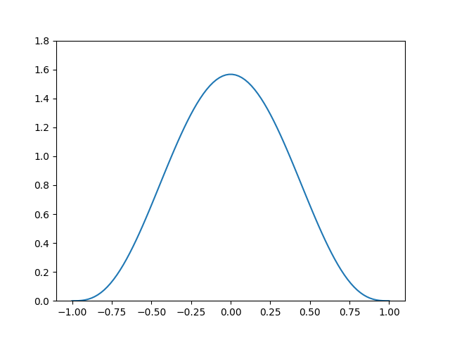
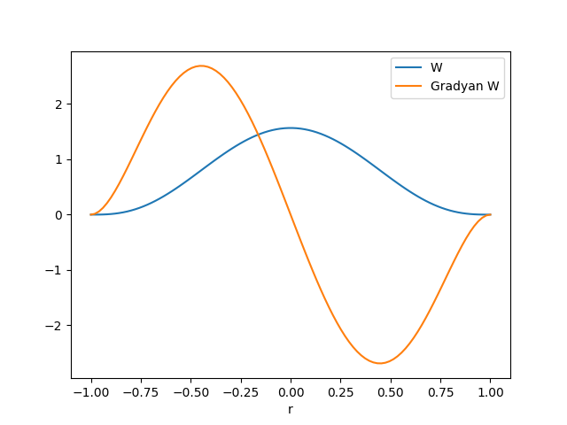
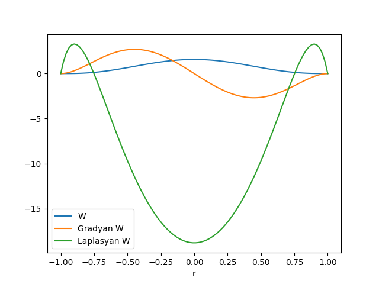
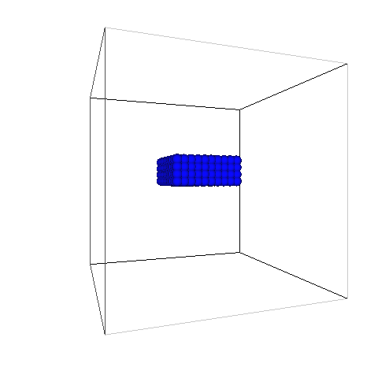
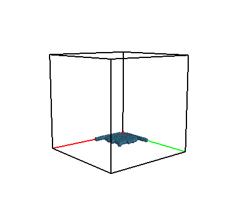
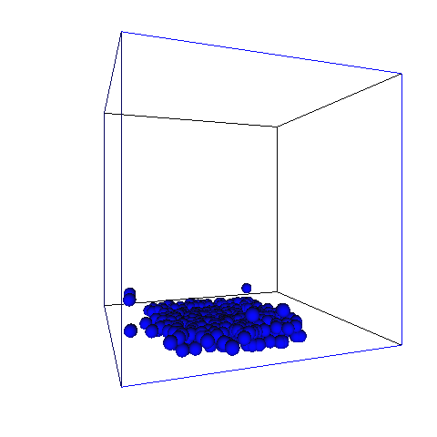
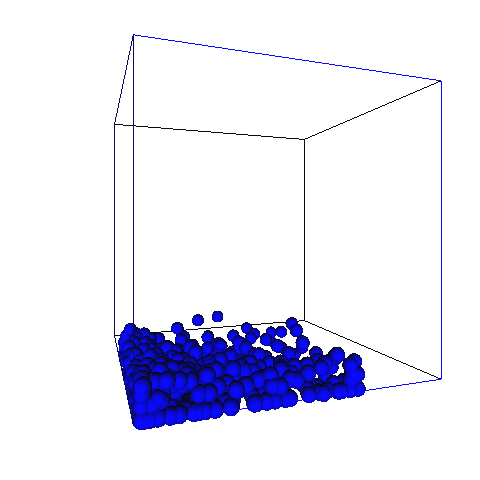

SPH sıvıların dinamik hareketini görmemizi sağlayan bir simulasyon tekniğidir. Lagrangian bakış açısını temel alır, yani Euler aksine, bir sıvı paketini takip edip nereye gittiğine, hangi değişimlere uğradığına bakarız.
Akış dinamiğini anlatan [5]'te
$$ \rho \frac{D \bar{u}}{D t} = F^{toplam} $$
denklemini gördük. Bu Newton'un $F=ma$ formülasyonun bir karşılığı. Bu denklemde basınç, ağdalık gibi kuvvetler için terimler vardı. Toplam kuvvetleri açarsak,
$$ F^{toplam} = F^{\textrm{basınç}} + F^{\textrm{ağdalık}} + F^{\textrm{yerçekim}} $$
Daha detaylı hali,
$$ \rho \frac{D \bar{u}}{D t} = - \nabla p + \mu \nabla \cdot \nabla \bar{u} + \rho \bar{g} \qquad (1) $$
Simulasyon için bize ivme gerekli. Kütle ve kuvvetten ivme, oradan sayısal entegrasyon ile yer değişimi elde edilebilir, katı-gövde simulasyonunu kodlarken [6]'da bu anlatılmıştı. O zaman eldeki $i$'inci parçacık için toplam kuvvet $F_i$ hesaplarsak
$$ a_i = \frac{\mathrm{d} u_i}{\mathrm{d} t} = \frac{F_i}{\rho_i} $$
ile ivmeyi buluruz, ve oradan devam ederiz.
Şimdi bize gereken $\nabla p(r_i)$ ve $\nabla^2 u(r_i)$ hesaplarını yaklaşık yapabilmemizi sağlayacak bir yaklaşım kullanmak. SPH teknikleri bunu sağlıyor.
Bir fonksiyon $A$ aradeğerleme (interpolation), yaklaşıklama üzerinden temsil edilebilir [1],
$$ A_I(r) = \int A(r') W(r-r',h) \mathrm{d} r' $$
Belirtilmediği yerlerde $r = \bar{r}$, $u = \bar{u}$ kabul edilebilir, bunlar vektör, $\mathrm{d} r'$ diferansiyel hacim öğesi. $A_I$ aradeğerlenmiş fonksiyon, $A$ yaklaşık göstermeye uğraştığımız fonksiyon. $A$ simulasyon ortamında hesaplanan herhangi bir ölçüt olabilir, mesela herhangi bir $r=(x,y,z)$ noktasındaki basınç, sıcaklık, yoğunluk, vs.
$W$ ağırlık fonksiyonudur, ya da çekirdek (kernel) fonksiyonu, sahip olması gereken bir şart,
$$ \int_\Omega W(r-r',h) \mathrm{d} r' = 1 $$
ve
$$ \lim_{h \to 0} W(r,h) = \delta(r) $$
[4, sf. 11]. [4]'te bu tekniğin Dirac fonksiyonu ile bağlantıları anlatıldı. Eğer $W = \delta$ dersek, yani çekirdek için Dirac fonksiyonu kullanırsak, orijinal fonksiyonun kendisini elde ederiz.
SPH'in temel fikri entegral aradeğerlemeden geliyor, hatta ona bir tür Çekirdek Yoğunluk Kestirme (Kernel Density Estimation) yöntemi de denebilir. Sıvıyı ayrıksal parçalara bölüyoruz, ve takip edilen ölçüt ne ise çekirdek fonksiyonu üzerinden bu ölçüt pürüzsüzleştiriliyor / etrafa yayılıyor / yumuşatılıyor. Yani çekirdek yarıçapı içindeki diğer parçacıklar o an üzerinde olduğumuz parçacığın neyini ölçüyorsak onu etkiliyor, mesela yakındaki parçacıkların basıncı ya da yoğunluğu bizim basıncı, yoğunluğu etkiliyor. Kabaca düşünülünce aslında bu bakış açısının sıvıların tabiatına son derece uygun olduğu anlaşılacaktır.
Yaklaşıklamayı sıvıya uygulamak için onu kütle öğelerine bölmemiz gerekli, $i$'inci öğe $m_i$ kütlesine, $\rho_i$ yoğunluğuna, ve $\bar{r}_i$ pozisyonuna sahip olacak. $A$ ölçütü / hesabının $i$ parçacığındaki değeri $A_i$ ile gösterilsin. Her parçacık için,
$$ A(r) = \int A(r') W(r-r',h) \mathrm{d} r' $$
$$ = \int \frac{A(r')}{\rho(r')} W(r-r',h) \rho(r') \mathrm{d} r' $$
Yaklaşıklık için $A_I(r)$ da diyebilirdik, ya da $\approx$ kullanabilirdik.
$\rho(r')$'i hem bölen hem bölünene eklediğimiz için hiçbir değişim yaratmamış olduk, ama böylece $\rho(r') \mathrm{d} r'$ ifadesi elde ettik ki ona parçacık kütlesi diyebiliriz. Böylece parçacıkların kütleleri üzerinden bir toplam alabiliriz,
$$ A_s(r) = \sum_b m_b \frac{A_b}{\rho_b} W(r-r_b, h) $$
Bu toplam teoride tüm parçacıklar üzerindendir, fakat pratikte $r$'ye yakın olan diğer parçacıklar üzerinden alınır, çoğunlukla çekirdek $2h$ gibi bir uzaklıkta zaten hızla sıfıra düştüğü için, ayrıca performans açısından, çok uzaktaki parçacıkları göz önüne almaya gerek yoktur.
Üstteki formül bana herhangi bir $r$ noktasında hesaplayabileceğim bir kestirme hesap (estimation) vermiş oldu. Parcaçık bazlı simulasyon yaptığımız için her $i$ parçacığı çevresindeki $j$ parçacıkları üzerinden bu kestirme hesabı yapabileceğiz.
Aradeğerlemenin bize sağladığı güzel bir özellik onun üzerinden mesela gradyan alabilmem. Diyelim ki $A$ ölçümü basınç, yani $p$. O zaman (1)'de görülen $-\nabla p$ formülünü üstteki entegral üzerinden açabilmem gerekir ($p$ ölçümünün ya da hesabının nereden geldiği ileride anlatılacak). $r$'de olan her $i$ parçacığı için $p(r_i)$ diyelim,
$$ p(r_i) = \sum_j \frac{m_j p_j}{\rho_j} W(r_i-r_j,h) $$
Bu denklemin gradyanını alabiliriz şimdi,
$$ \nabla p(r_i) = \sum \frac{m_j p_j}{\rho_j} \nabla W(r_i-r_j,h) $$
Gradyan direk $W$ üzerinde uygulanmış oldu. Burada modellemeyi yapan kişi tabii ki $W$'yi "gradyanı rahat alınan" fonksiyonlar arasından da seçecektir, böylece işi daha kolaylaşacaktır.
O zaman üstteki sonuç ile $-\nabla p$ yazarsak,
$$ F_i^{\textrm{basınç}} = - \sum_j \frac{m_j p_j}{\rho_j} \nabla W(r_i-r_j,h) $$
elde ederiz.
Yanlız burada bir problem var, $j$ bölgesindeki basıncı kullanarak o fark üzerinden $i$ üzerindeki kuvveti hesapladık, fakat basınç farkı dolayısıyla $i$'nin $j$ üzerinde uyguladığı kuvvet aynı olmayabilir. Yani kuvvet simetrik olmaz, fakat fizik kanunlarına göre etki-tepki aynı olmalıdır. Simulasyon amacıyla çoğunlukla yapılan dışarıdan müdahele ile kuvveti simetrik hale getirmektir, mesela bir yöntem basit aritmetik ortalama almak,
$$ F_i^{\textrm{basınç}} = - \nabla p(r_i) = - \sum_j m_j \frac{p_i + p_j}{2 \rho_j} \nabla W(r_i-r_j,h) $$
Ağdalık kuvvetine gelelim. İlk başta (1) bazlı olarak bu formül
$$ F_i^{\textrm{ağdalık}} = \mu \sum_j m_j \frac{u_j}{\rho_j} \nabla^2 W (r_i-r_j, h) $$
olarak yazılabilirdi. Fakat simetriklik problemi burada da var, bu problem de hıza olan bağlantıyı izafi hıza çevirerek çözülebilir, çünkü fiziksel olarak düşünülürse esas önemli olan mutlak hızlar değil iki parçacığın hızlarının farkı, ya da bir parçacığın diğerine baktığında gördüğü hız (ki bu izafi demek) o zaman
$$ F_i^{\textrm{ağdalık}} = \mu \sum_j m_j \frac{u_j-u_i}{\rho_j} \nabla^2 W (r_i-r_j, h) $$
daha uygun olur.
Çekirdek Fonksiyon Seçimi
SPH'in stabilitesi, doğruluğu ve hesap hızı pürüzleştirme çekirdeğinin doğru
seçilmiş olmasına bağlı [2]. Çekirdek fonksiyonlarını hangisinin, hangi
durumlarda iyi olacağı aktif bir araştırma alanıdır. Yaygın kullanılan bir
çekirdek poly6 ismiyle bilinen 6. derece polinom çekirdeği. Bu fonksiyon,
$$ W_{poly6} (r, h) = \frac{315}{64 \pi h^9} \left\{ \begin{array}{ll} (h^2 - ||r||^2)^3 & 0 \le ||r|| \le h \\ 0 & ||r|| > h \end{array} \right. $$
Gradyanı,
$$ \nabla W (r, h) = - \frac{945}{32 \pi h^9} r ( h^2 - ||r||^2)^2 $$
Laplasyanı ise,
$$ \nabla^2 W (r, h) = - \frac{945}{32\pi h^9} (h^2 - ||r||^2)(3 h^2 - 7||r||^2) $$
Tek boyutta ve $h=1$ üzerinden her üç fonksiyonu grafikleyebiliriz,
r = np.linspace(-1,1,100)
h = 1
import pandas as pd
df = pd.DataFrame(r)
df.columns = ['r']
df['W'] = (315./(64*np.pi*h**9)) * (h**2 - np.abs(r)**2)**3
df = df.set_index('r')
df.plot()
plt.savefig('compscieng_app40sph_01.png')

df = pd.DataFrame(r)
df.columns = ['r']
df['W'] = (315./(64*np.pi*h**9)) * (h**2 - np.abs(r)**2)**3
df['Gradyan W'] = -945./(32*np.pi*h**9) * r * (h**2 - np.abs(r)**2)**2
df = df.set_index('r')
df.plot()
plt.savefig('compscieng_app40sph_02.png')

df = pd.DataFrame(r)
df.columns = ['r']
df['W'] = (315./(64*np.pi*h**9)) * (h**2 - np.abs(r)**2)**3
df['Gradyan W'] = -945./(32*np.pi*h**9) * r * (h**2 - np.abs(r)**2)**2
df['Laplasyan W'] = -945./(32*np.pi*h**9) * \
(h**2-np.abs(r)**2) * \
(3*h**2 - 7**np.abs(r)**2)
df = df.set_index('r')
df.plot()
plt.savefig('compscieng_app40sph_03.png')

Basınç
Basınç kuvveti eğer basınç biliniyorsa hesaplanabilir, basıncın kendisini hesaplamak için İdeal Gaz Kanunu gerekli [9], bu kanun
$$ p V = n R T $$
ki $V = 1 / \rho$, yani birim kütleye düşen hacim, $n$ mol üzerinden kaç tane gaz parçacığı olduğu, $R$ evrensel gaz sabiti, $T$ ise sıcaklık. SPH için sıvıda eşsıcaklık (isothermal), ve parçacıkların sayısı simulasyon sırasında değişmez kabul edilir, o zaman üstteki formülün sağ tarafında bir gaz sertlik (stiffness) sabiti $k$ kullanılabilir [4, sf. 18],
$$ p V = k $$
$$ p \frac{1}{\rho} = k $$
$$ p = k \rho $$
Sayısal kodlamalarda stabilite amaçlı olarak ayrıca bir de $\rho_0$ kullanılır, ki her basınç hesabı için yoğunluğun bu baz $\rho_0$ ile olan farkı bazlı alınır, nihai formül,
$$ p = k (\rho - \rho_0) $$
Simülasyon kodu alttadır. Simüle edilen bir blok sıvıyı havada asılı bir durumdan bırakmak. Ne olacak? Yerçekim etkisiyle tabii ki sıvı parçacıkları düşmeye başlayacaklar, ama normal sadece elastik çarpışma içeren simülasyondan farklı olarak şimdi sıvı parçacıkları arasında ağdalık var, yani birbirlerine yakın durmaya meyilliler. Ayrıca basınç var, tüm bunların etkisini simüle eden program acaba sıvısal bir davranış gösterecek mi? Simülasyon animasyon / video olarak [10]'da bulunabilir.
Bunu simulasyonda acaba gorebilecek miyiz?
# convert -delay 20 /tmp/glut/glutout-*.png $HOME/Downloads/balls4.gif
from OpenGL.GL import *
from OpenGL.GLU import *
from OpenGL.GLUT import *
from random import random
from PIL import Image
from PIL import ImageOps
from collections import defaultdict
import numpy as np, datetime
import sys, numpy.linalg as lin
p1,p2,p3 = 73856093, 19349663, 83492791
G = np.array([0.0, 0.0, -9.8*2])
B = 10 # top
l = 0.2 # bolec kutu buyuklugu
n = B*20 # bolec sozluk buyuklugu
REST_DENS = 10.0
GAS_CONST = 0.5
MASS = 100.0
VISC = 20.0
DT = 0.1
H = 0.2 # kernel radius
HSQ = H*H # radius^2 for optimization
POLY6 = 315.0/(65.0*np.pi*np.power(H, 9.));
SPIKY_GRAD = -45.0/(np.pi*np.power(H, 6.));
VISC_LAP = 45.0/(np.pi*np.power(H, 6.));
EPS = 0.05
BOUND_DAMPING = -0.5
img = True
def spatial_hash(x):
"""
x = [x0,x1,x2] uc boyutlu kordinatlari icin bir bolec (hash) degeri uret
"""
ix,iy,iz = np.floor((x[0]+2.0)/l), np.floor((x[1]+2.0)/l), np.floor((x[2]+2.0)/l)
return (int(ix*p1) ^ int(iy*p2) ^ int(iz*p3)) % n
class Simulation:
def __init__(self):
self.geo_hash_list = None
self.i = 0
self.r = 0.05
self.cor = 0.5
self.balls = []
self.tm = 0.0
self.th = 200.0
self.mmax = 1.0-self.r
self.mmin = -1.0+self.r
self.right = False
self.left = False
def init(self):
i = 0
for xs in np.linspace(-0.3, 0.3, 10):
for ys in np.linspace(-0.3, 0.3, 10):
for zs in np.linspace(0.0, 0.2, 4):
v = np.array([0.0, 0.0, 0.0])
f = np.array([0,0,0])
x = np.array([xs, ys, zs])
d = {'x': x, 'f':f, 'v': v, 'i': i, 'rho': 0.0, 'p': 0.0}
self.balls.append(d)
i += 1
tm = 0.0
glEnable(GL_LIGHTING)
glEnable(GL_LIGHT0)
glEnable(GL_DEPTH_TEST)
glClearColor(1.0,1.0,1.0,1.0)
glMatrixMode(GL_PROJECTION)
glLoadIdentity()
gluPerspective(60.0,1.0,1.0,50.0)
glTranslatef(0.0,0.0,-3.5)
glMatrixMode(GL_MODELVIEW)
glLoadIdentity()
def hash_balls(self):
self.geo_hash_list = defaultdict(list)
for i,b in enumerate(self.balls):
self.geo_hash_list[spatial_hash(self.balls[i]['x'])].append(self.balls[i])
def computeDensityPressure(self):
for i,pi in enumerate(self.balls):
pi['rho'] = 0.0
h = spatial_hash(self.balls[i]['x']) # su anki topun boleci
if (len(self.geo_hash_list[h])>1): # yakinda top var mi
otherList = self.geo_hash_list[h] # varsa isle
for j,pj in enumerate(otherList):
r2 = lin.norm(pj['x']-pi['x'])**2
if r2 < HSQ:
pi['rho'] += MASS*POLY6*np.power(HSQ-r2, 3.0)
pi['p'] = GAS_CONST*(pi['rho'] - REST_DENS)
def computeForces(self):
for i,pi in enumerate(self.balls):
fpress = np.array([0.0, 0.0, 0.0])
fvisc = np.array([0.0, 0.0, 0.0])
h = spatial_hash(self.balls[i]['x']) # su anki topun boleci
if (len(self.geo_hash_list[h])>1): # yakinda top var mi
otherList = self.geo_hash_list[h] # varsa isle
for j,pj in enumerate(otherList):
if pj['i'] == pi['i']: continue
rij = pi['x']-pj['x']
r = lin.norm(rij)
if r < H:
if np.sum(rij)>0.0: rij = rij / r
tmp1 = -rij*MASS*(pi['p'] + pj['p']) / (2.0 * pj['rho'])
tmp2 = SPIKY_GRAD*np.power(H-r,2.0)
fpress += (tmp1 * tmp2)
tmp1 = VISC*MASS*(pj['v'] - pi['v'])
tmp2 = pj['rho'] * VISC_LAP*(H-r)
fvisc += (tmp1 / tmp2)
fgrav = G * pi['rho']
pi['f'] = fpress + fvisc + fgrav
def integrate(self):
for j,p in enumerate(self.balls):
if p['rho'] > 0.0:
p['v'] += DT*p['f']/p['rho']
p['x'] += DT*p['v']
if p['x'][0]-EPS < -1.0:
p['v'][0] *= BOUND_DAMPING
p['x'][0] = -1.0
if p['x'][0]+EPS > 1.0:
p['v'][0] *= BOUND_DAMPING
p['x'][0] = 1.0-EPS
if p['x'][1]-EPS < -1.0:
p['v'][1] *= BOUND_DAMPING
p['x'][1] = -1.0
if p['x'][1]+EPS > 1.0:
p['v'][1] *= BOUND_DAMPING
p['x'][1] = 1.0-EPS
if p['x'][2]-EPS < -1.0:
p['v'][2] *= BOUND_DAMPING
p['x'][2] = -1.0
if p['x'][2]+EPS > 1.0:
p['v'][2] *= BOUND_DAMPING
p['x'][2] = 1.0-EPS
self.hash_balls()
def update(self):
self.hash_balls()
self.computeDensityPressure()
self.computeForces()
self.integrate()
if self.i > 40: exit()
glutPostRedisplay()
def display(self):
glClear( GL_COLOR_BUFFER_BIT | GL_DEPTH_BUFFER_BIT)
glPushMatrix()
glRotatef(self.th,0.0,1.0,0.0)
glRotatef(90.0,-1.0,0.0,0.0)
glutWireCube(2.0)
for j,b in enumerate(self.balls):
glPushMatrix()
glTranslatef(b['x'][0],b['x'][1],b['x'][2])
glMaterialfv(GL_FRONT, GL_DIFFUSE, [0.0, 0.0, 1.0, 1.0])
glutSolidSphere(self.r,50,50)
glPopMatrix()
glPopMatrix()
glutSwapBuffers()
if img and self.i % 2 == 0:
width,height = 480,480
data = glReadPixels(0, 0, width, height, GL_RGBA, GL_UNSIGNED_BYTE)
image = Image.frombytes("RGBA", (width, height), data)
image = ImageOps.flip(image)
image.save('/tmp/glut/glutout-%03d.png' % self.i, 'PNG')
self.i += 1
if __name__ == '__main__':
if (os.path.exists("/tmp/glut") == False): os.mkdir("/tmp/glut")
s = Simulation()
glutInit(())
glutInitDisplayMode(GLUT_DOUBLE | GLUT_RGB | GLUT_DEPTH)
glutInitWindowSize(500,500)
glutCreateWindow("GLUT Bouncing Ball in Python")
glutDisplayFunc(s.display)
glutIdleFunc(s.update)
s.init()
glutMainLoop()
 
 
Kaynaklar
[1] Monaghan, Smoothed particle hydrodynamics, 2005
[2] Schuermann, Particle-Based Fluid Simulation with SPH, https://lucasschuermann.com/writing/particle-based-fluid-simulation
[3] Bayramlı, Hesapsal Bilim, Ders 4
[4] Kelager, Lagrangian Fluid Dynamics Using Smoothed Particle Hydrodynamics
[5] Bayramlı, Fizik, Akış Dinamiği
[6] Bayramlı, Fizik, Simulasyon
[7] Monaghan, Introduction to SPH Part I, https://www.youtu.be/tAXHCAEgSuE
[8] Müller, Particle-Based Fluid Simulation for Interactive Applications
[9] Bayramlı, Fizik, Temel Fizik 3, Basınç, Çarpışma
[10] Bayramlı, Simulasyon Animasyonu, https://github.com/burakbayramli/classnotes/blob/master/compscieng/compscieng_app40sph/balls4.gif?raw=true
{kind=link}